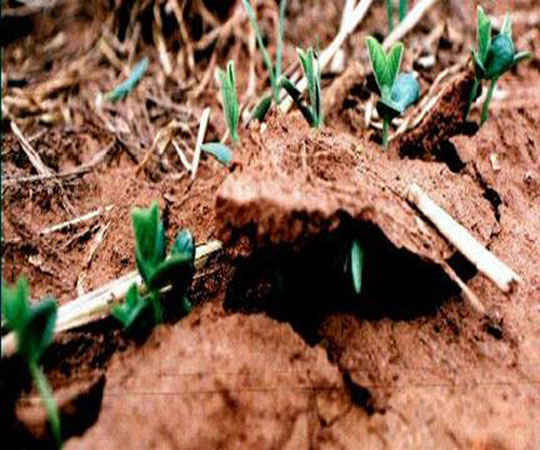
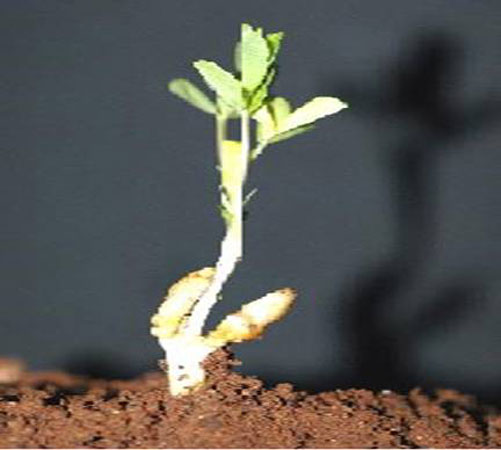
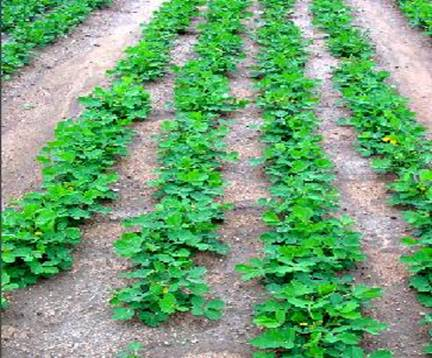
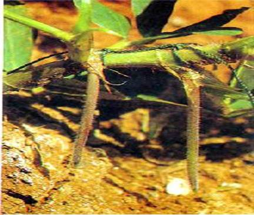
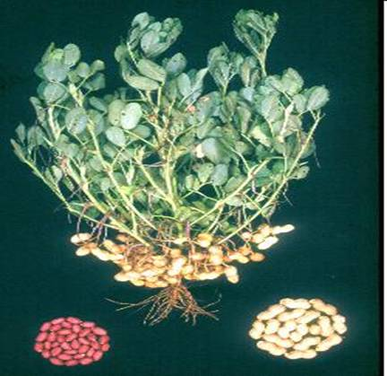
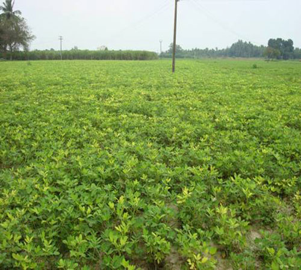

Groundnut Harvesting
Harvest:The prominent symptoms of maturity are the yellowing of leaves, the shedding of the older leaves, the development of the proper colour of the testa and a dark tint inside the shell. The bunch and semi-spreading varieties are usually harvested by hand pulling when there is adequate moisture in the soil. The spreading types, on the other hand, are harvested by digging or by ploughing or working a blade harrow. The pulled out plants are stacked for a few days for drying and are stripped afterwards.
- Observe the crop, considering its average duration. Drying and falling of older leaves and yellowing of the top leaves indicate maturity.
- Pull out a few plants at random and shell the pods. If the inner shell is brownish black and not white, then the crop has matured.
- Irrigate prior to harvest, if the soil is dry, as this will facilitate easy harvesting. If there is enough moisture in the soil, there is no need for irrigation for harvesting.
- If water is not available for irrigating the field prior to harvest, work a mould board plough or work a country plough, so that the plants are uprooted. Engage labour to search pods left out in the soil, if necessary.
NOTE: Do not keep the pulled out plants in heaps when they are wet, especially the bunch varieties, as the pods will start sprouting.
- Strip off the pods from the plants. Groundnut stripper developed by TNAU can be used.
- Dry the pods in the sun for 4 or 5 days. Repeat drying for 2 or 3 more days after an interval of 2 or 3 days to ensure complete drying. When temperature is very high, avoid direct sun drying. Collect the pods in gunnies and store on the ground over a layer of sand to avoid any moisture coming in contact with dry pods.

Seedling emerge at 5-10 days
Seedling emergence stage
Flowering stage

Pegging stage
Maturity stage